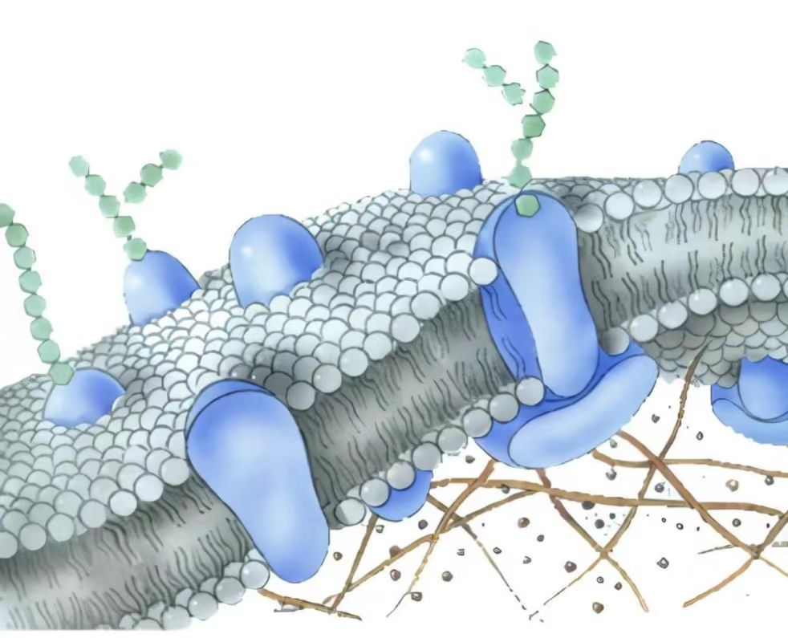

细胞膜 （流动镶嵌模型）
- 功能：选择透过性，调控物质进出，细胞信息交流
- 组成：磷脂双分子层、膜蛋白、少量糖类
- 关键词：通道蛋白、载体蛋白、受体
探索细胞世界的奥秘，了解生命的基本单位


| 项目 | 线粒体 | 叶绿体 |
|---|---|---|
| 功能 | 有氧呼吸，生成ATP | 光合作用，生产有机物与释放氧气 |
| 膜结构 | 双层膜，内膜形成嵴 | 双层膜，内含基粒（类囊体） |
| 遗传物质 | 含少量DNA与核糖体 | 含少量DNA与核糖体 |
| 能量转化 | 化学能释放（氧化分解） | 光能转化为化学能（合成） |
| 分布 | 动植物细胞均有 | 植物与某些原生生物具有 |
本页要点参考人教版高中生物必修一相关章节的术语与表述，以课堂教学为导向进行组织与呈现。